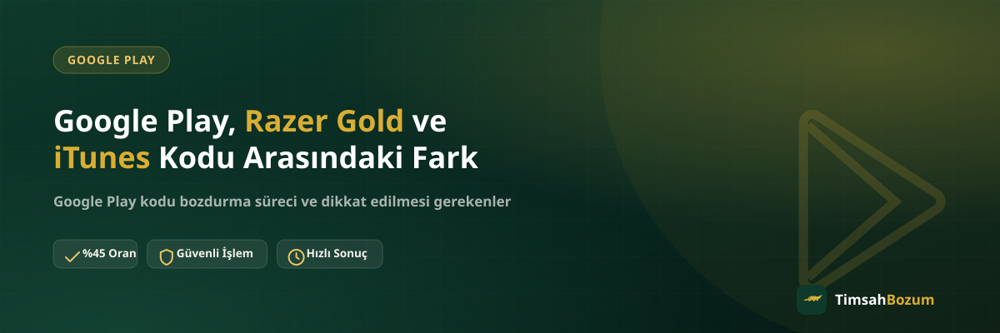

Google Play, Razer Gold ve iTunes kodlarının hepsi kod tabanlı ön ödemeli ürünler ama bozdurma tarafında aralarında önemli farklar var. Bu üç kodu birbirine karıştırmak, yanlış bir bozum sitesine yazmaktan ya da yanlış bilgiyle işlem başlatmaya çalışmaktan daha sık karşılaşılan bir durum. Bu yazıda üç kod türü arasındaki farkları — tutar kuralları, oranlar ve süreç açısından — netleştiriyoruz.
Üç Kod da Aynı Mantıkla mı Çalışıyor?
Google Play, Razer Gold ve iTunes kodlarının ortak noktası şu: hepsi tek kullanımlık, kod tabanlı ürünler. Yani bir hesaba tanımlanmış bakiye değil, henüz kullanılmamış bir kod veya PIN bozduruluyor. Bu üçü, bakiye tabanlı hizmetlerden (Pokus, Paycell, mobil ödeme) burada ayrılıyor: bakiye tabanlı hizmetlerde hesabındaki tutarın bir kısmını bozdurabilirsin, kod tabanlı hizmetlerde ise kodun tamamı tek seferde değerlendirilir. Ama Google Play, Razer Gold ve iTunes'un kendi aralarında da fark var, aşağıda tek tek bakalım.
Google Play Kodu ile Razer Gold Kodu Arasındaki Fark Nedir?
En belirgin fark tutar tarafında. Google Play kodlarında yalnızca 500 TL veya 1.000 TL değerindeki kodlar işleme alınıyor; daha küçük tutarlı bir Google Play kodu (25, 50, 100 veya 250 TL gibi) bozdurulamıyor. Razer Gold tarafında ise böyle bir tutar sınırı yok, elindeki kodun değeri ne olursa olsun bozdurma işlemi yapılabiliyor. İkinci fark oran: Razer Gold'da güncel oran %70 iken Google Play'de %45. Bu fark, kodların ikinci elde ne kadar hızlı ve kolay değerlendirildiğiyle, yani bölge kısıtı ve talep yapısıyla ilgili.
iTunes Kodu Google Play'den Nasıl Ayrılıyor?
iTunes kodu da Razer Gold gibi tutar sınırı olmadan bozdurulabiliyor; hangi değerde bir iTunes kodun varsa onu paylaşman yeterli. Oran tarafında iTunes %55 ile Google Play'in (%45) üstünde, Razer Gold'un (%70) ise altında konumlanıyor. Yani üç koddan tutar sınırı olan tek hizmet Google Play; Razer Gold ve iTunes'ta kodun değeri ne olursa olsun işlem yapılabiliyor.
Neden Sadece 500 TL ve 1.000 TL Google Play Kodu Alınıyor?
Bu kısıtlama Google Play kodlarının ikinci el piyasadaki hareket hızıyla ilgili bir tercih. Daha küçük tutarlı kodların işlenmesi süreci verimsizleştirdiği için TimsahBozum'da Google Play tarafında yalnızca 500 TL ve 1.000 TL değerindeki kodlar kabul ediliyor. Elinde daha küçük tutarlı bir Google Play kodu varsa bunu Google Play üzerinde harcamak ya da birden fazla küçük kodu birleştirerek 500 TL veya 1.000 TL'lik bir kod satın almak gibi alternatifler değerlendirilebilir; bu konuda güncel bilgiyi WhatsApp'tan teyit etmen en doğrusu.
Hangi Kodda Kısmi Bozum Yapılabilir?
Hiçbirinde. Google Play, Razer Gold ve iTunes üçü de kod tabanlı olduğu için kodun tamamı tek seferde bozduruluyor; kodun bir kısmını bozdurup kalanını hesapta tutmak mümkün değil. Kısmi bozum yalnızca bakiye tabanlı hizmetlerde (Pokus, Paycell, Vodafone/Türk Telekom/Turkcell mobil ödeme) geçerli bir seçenek. Elinde hem kod hem bakiye varsa, kod tarafında tam değerin bozdurulacağını, bakiye tarafında ise istediğin kısmı seçebileceğini bilerek işlemi planlaman süreci netleştirir.
Oranlar Neden Birbirinden Farklı?
Her kod türünün ikinci el piyasada değerlendirilme hızı ve talep yapısı farklı olduğu için oranlar da farklılaşıyor: Razer Gold %70, iTunes %55, Google Play %45. Bu oranlar sabit değil, piyasa koşullarına göre güncellenebiliyor. Sitede yayınlanan oranlar genel bir referans niteliğinde; işlem öncesi güncel oranı WhatsApp hattımızdan teyit etmen, hangi tutarı eline geçireceğini netleştirmenin en güvenilir yolu.
Kod mu Bakiye mi? Karıştırmamak İçin Nasıl Anlarım?
Basit bir kural var: elinde fiziksel veya dijital bir kod/PIN varsa (kazıma kart, e-posta ile gelen kod, kutu üzerindeki seri numara gibi) bu bir koddur ve kod tabanlı kurallar geçerlidir. Elinde bir hesaba işlenmiş, ekranda görünen bir bakiye varsa bu bakiye tabanlı bir hizmettir ve kısmi bozum yapılabilir. Google Play, Razer Gold ve iTunes'ta hesaba işlenmiş bakiye bozdurulamaz — bu üçünün de kendi platformunun kuralıdır, TimsahBozum'un değil. Hangi durumda olduğundan emin değilsen, ekran görüntüsünü WhatsApp'tan paylaşman süreci en hızlı netleştiren yol.
Bu Üç Hizmette İşlem Süreci Aynı mı?
Evet, süreç açısından üçü de aynı adımları izliyor: WhatsApp hattımızdan yazıp hangi kodu bozdurmak istediğini belirtiyorsun, kod bilgisini paylaşıyorsun, güncel oranı teyit ediyorsun ve onay sonrası ödeme WhatsApp üzerinden görüşülen yöntemle yapılıyor. Üyelik, form doldurma veya kimlik belgesi istenmiyor, hesaba erişim talep edilmiyor. Elinde birden fazla hizmete ait kod varsa (örneğin hem bir Razer Gold kodu hem bir Google Play kodu), hepsini tek mesajda toplu paylaşman süreci hızlandırıyor.
Özetle Hangi Kod Hangi Kurala Tabi?
Google Play kodunda tutar sınırı var (yalnızca 500 TL ve 1.000 TL), oran %45. Razer Gold'da tutar sınırı yok, oran %70. iTunes'ta da tutar sınırı yok, oran %55. Üçü de kod tabanlı olduğu için kısmi bozum hiçbirinde mümkün değil ve hesaba işlenmiş bakiye hiçbirinde bozdurulamıyor. Bu farkları bilmek, ilk mesajını doğru bilgiyle yazmanı ve süreci gereksiz sorulara takılmadan ilerletmeni sağlıyor.
Elindeki Kodu Bozdurmadan Önce Ne Yapmalısın?
Hangi hizmete ait olduğuna karar verdikten sonra kodun daha önce kullanılmadığından emin ol; kullanılmış bir kod için ödeme yapılamıyor. Google Play kodu bozduruyorsan tutarın 500 TL veya 1.000 TL olduğunu kontrol et, farklı bir tutarsa işlem yapılamayacağını unutma. Razer Gold veya iTunes kodu bozduruyorsan tutar sınırı olmadığı için bu adımı atlayabilirsin, doğrudan kod bilgisini paylaşabilirsin. Her üç hizmette de güncel oranı işlem öncesi WhatsApp'tan teyit etmek, sürprizle karşılaşmamanın en pratik yolu.
İlgili Yazılar
- Google Play Kodu Nasıl Bozdurulur? Adım Adım Rehber
- Razer Gold Kodu Nasıl Bozdurulur? Adım Adım Rehber
- iTunes Bakiyesi Nedir, Nereden Elde Edilir?
Elinde Google Play, Razer Gold veya iTunes kodu varsa, hangi kurala tabi olduğunu artık biliyorsun. Kodunu ve varsa ekran görüntünü hazırlayıp WhatsApp hattımıza yazarak güncel oranı teyit edebilir, işlemini başlatabilirsin.